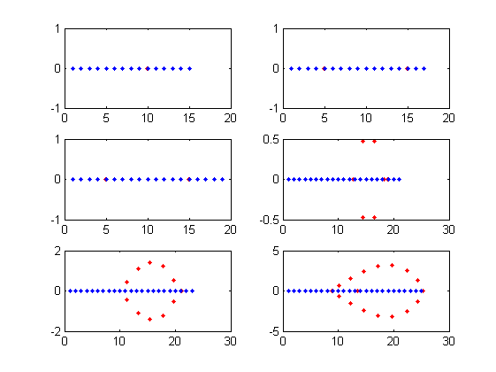

i=0; roots1 = zeros(6,26);%arxikopoihsh pinakwn pou tha valoume tis pragmatikes rizes pol1 = zeros(6,26);%pinakas gia tn dhmiourgia tou poluwnumou pol2 = zeros(6,2);%pinakas gia tn dhmiourgia tou poluwnumou roots2 = zeros(6,26);%arxikopoihsh pinakwn pou tha valoume tis rizes pou vriskoume me tn sunarthsh roots for n=[15:2:25] i = i+1; roots1(i,1:n) = 1:n;%gia ta 6 poluwnuma apothhkeuoume tis pragmatikes rizes pol1(i,1:n+1) = poly(roots1(i,1:n));%vriskoume tous suntelestes tou poluwnumou pol2(i,1:2) = polyval(pol1(i,1:n+1),[1 n]);%vriskoume tis times tou poluwnumou stis diafores theseis pou zhteitai roots2(i,1:n) = roots(pol1(i,1:n+1));%xrhshmopoioume thn roots gia na vroume tis rizes tou poluwnumou %h roots2 periexei toso tis migadikes oso kai ts pragmatikes times %opote sthn subplot tis diaxwrizoume me thn sunarthsh real() kai imag() subplot(3,2,i) plot(real(roots2(i,1:n)), imag(roots2(i,1:n)), 'r.', real(roots1(i,1:n)),0, 'b.') end